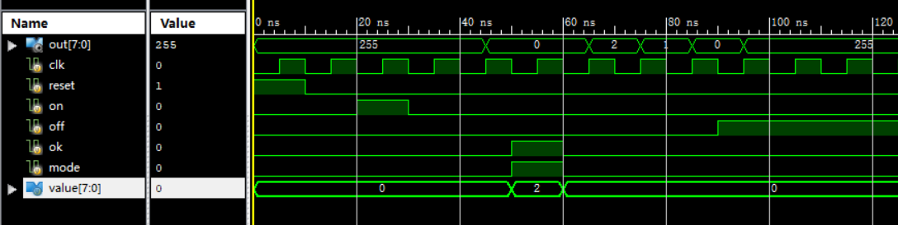

copre
verilog
主播在电梯、CPU检查challenge、Timer都卡过，悲惨（）
电梯
注意到它的输出要求是立即变化
电梯的方向和楼层是下一周期变化那么我们就要用寄存器存out
并在每一时钟周期开始循环判断前就对out的值进行一个判断同时考虑到为时序逻辑模块
我们需要把out单独拿出来，用always结构进行一个判断同时注意到，每一周期输入若reset=1
则置initial，直接进入下一周期
不要在这个判断后直接if开始判断from
而是要在reset判断的大的else框架里进行一个操作在电梯各状态的维护上，
注意理清逻辑关系，想清楚先后判断顺序以及分布
再进行写，让代码尽可能简洁清晰
此处附上代码~
1 | module elevator( |
CPU检查challenge
这里其实就是一些小问题
- 8’h2的8是指2进制的位数
- 比较大小时注意变量位数的匹配
- 写16进制数时小心点hhhh
- 还有就是位移表示循环读入字符组成10进制:
num <=num<<3+num<<2 +char
(10 = 8 + 2) - 判断一个数是否是4的倍数:num[1:0]==2’b00
- a必须是b的整数倍: a & (b-1) != 0
我愿跨越山海赴你的烽月，等白首亦如初见~
对不起（）乱入的歌词
主播一般采取先写题目说明，再写伪代码，最后实际写代码的形式
感觉比较有效
给出思路整理
verilog 字符自动机
名称： id_fsm
模块
char 接受串行输入的字符 8
clk 接受时钟信号 1
out 状态机输出 1
每个clk上升沿到来瞬间：
从char读入一个字符c（c用ascii码表示）
S:已经读入的字符串
设读入前为S 读入c后的新Sc
Sc符合定义 out置为1 否则out置为0
ID：字母+数字
对于out:
如果上一周期out=1
读入了一个数字则out=1
读入了一个非数字out=0
如果上一周期out=0
上一字符为字母，读入数字，out=1
否则out=0
需要一个额外的变量储存上一字符
给出伪代码
verilog_cpu
clk 1
reset 复位 1
char 输入的字符流 8
format_type 2
0格式错误
1寄存器
2数据存储器
示例
^ 1 0 2 4 @ 0 0 0 0 3 0 f c : $ 2 < = 8 9 a b c d e f # ^ 6 4
0 0 0 0 0 0 0 0 0 0 0 0 0 0 0 0 0 0 0 0 0 0 0 0 0 0 0 0 0 0 1 0 0 0
输出单独拎出来挡在最前面
flag=7
format_type = state
flag置0
输出1
否则输出0
!
reset判断
type=1
flag=0
state=0
cnt=0
后面都放在大的else里
if 读入^开始识别
flag置1
else if flag=1&&读入数字
cnt++
否则flag置0
else if 读入@&&flag=1&&cnt>0&&cnt<5
flag=2
cnt=0
否则flag置0
else if flag=2&&读入数字或者字母
cnt++
否则flag=0
else if 读入: && flag=2 && cnt==8
flag=3
cnt=0
否则flag=0
else if 读入空格 && flag=3 && cnt=0
flag仍为3
else if 读入$ && flag=3
flag=4
state = 1(1寄存2存储)
否则flag=0
else if 读入* && flag=3
flag=4
state=2
否则flag=0
else if 读入数字&&flag=4
cnt++
否则flag=0
else if 读入空格 && flag=4 && cnt=0
flag仍为4
else if 读入< && flag=4 && cnt>0&&cnt<5
flag=5
cnt=0
否则flag=0
else if 读入=&&flag=5
flag=6
否则flag=0
else if 读入空格 && flag=6 && cnt=0
flag仍为6
else if 读入数字或者字母&&flag=6
cnt++
否则flag=0
else if 读入# && flag=6 && cnt==8
flag=7
结束识别
else
flag = 0
state = 0
优化：
合并空格判断部分
合并10进制判断部分
合并16进制判断部分
Timer
交了21遍hh Timer你欠我的拿什么还
- 要理解非阻塞赋值！！！<=
延迟两个周期再操作
就是cnt==2再操作 - 对于延迟类，
老老实实设延迟变量
严格激活条件（cnt=0且有激活信号）
激活信号可能持续不止一个周期
只响应第一个周期的信号即可 - 严格按照状态转移方程写代码
- 异步复位:
1
always@(posedge clk or posedge reset)
TestBench的写法
这里给出一个示例(Timer)
1 | module tb; |
下面是正确的定时器程序跑出的波形图示例

MIP
主播只在哈密顿环卡了许久，这里简单描述一下心得
不要忘了写.text好吧
也给一点初始化方法
1 |
|
合理使用marco
- 不要为了简单上来就写一堆marco把自己绕晕了
- 不要拼错marco
- 不要忘了写 .end_marco
这里给一些常用的.marco
1 | Input(%in) |
寄存器的使用
我们要规定好固定寄存器的固定使用
比如说作为循环变量，数组地址，取出的数组数，恒1变量，标志位等等
那么在函数里这个寄存器就固定用于这个使用，避免数量一多赋值混淆不清
函数的寄存器出栈和入栈问题
想清楚哪些寄存器我们在递归调用函数时可能会用到并改变寄存器的值
比如循环变量、函数输入参数等等
对于储存这些值的变量我们要在调用函数前放入栈中，调用函数后拿出
为了保证结构性，先写C语言程序，载翻译成MIPS
这里以主播写的Halmiton函数为例体现以上两点
1 | #我们约定表示t0用来表示x |